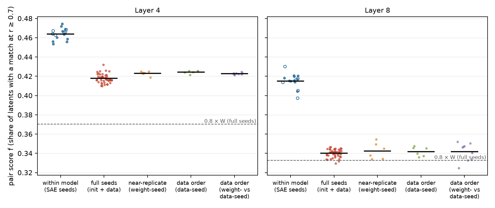
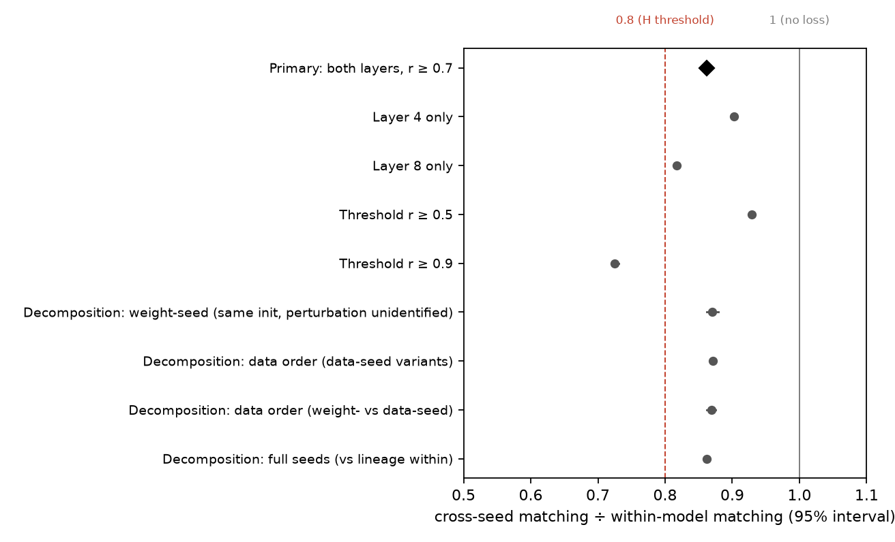
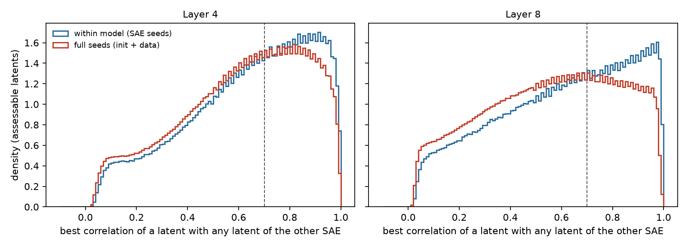
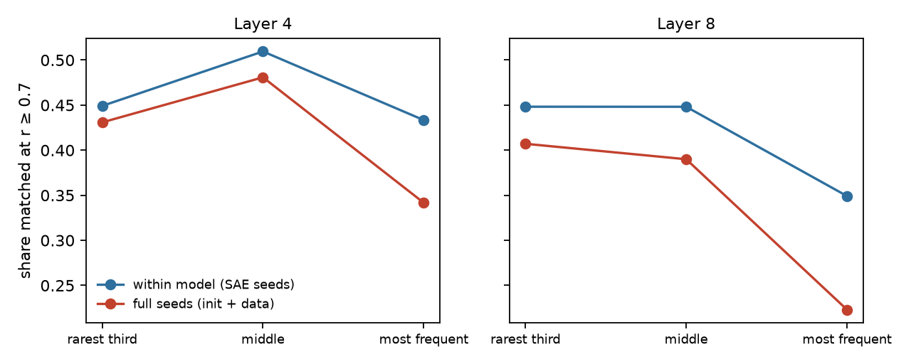
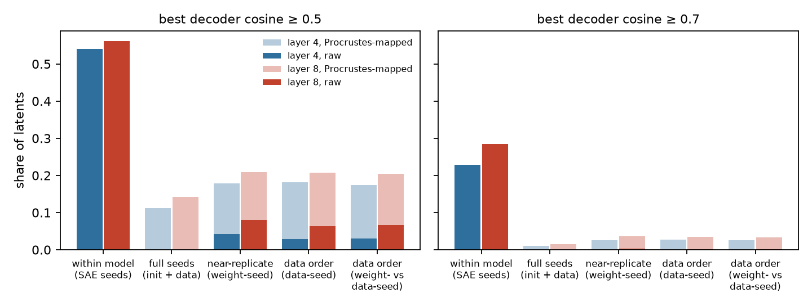

Verdict: Refuted.
- The ratio. Features recur across independently pretrained models at 0.862 times the rate at which they recur across SAE retrainings on one model (95% interval 0.859-0.866). The hypothesis needed a ratio below 0.8.
- The scope. The verdict holds at the preregistered criterion: a match is a correlation of at least 0.7, and layers 4 and 8 are pooled. At the stricter criterion r ≥ 0.9 the ratio is 0.725 and the hypothesis would have held. Layer 8 alone is 0.817, two points above the line.
- Where the irreproducibility lies. Mostly in the SAE, not in the pretraining run. Two SAEs on the same model share 46% (layer 4) and 42% (layer 8) of their latents at a correlation of at least 0.7. SAEs on different pretraining runs share 42% and 34%.
- Where the extra loss across runs is concentrated:
- in near-exact matches (ratio 0.725 at r ≥ 0.9, where the rule would return Supported);
- in the most frequently firing latents;
- in the deeper layer.
- Two further findings:
- Latents that both of a model's other SAE seeds re-find have a match in 85% (layer 4) and 78% (layer 8) of comparisons with the other independent runs.
- The "weight-seed" variants, released as differing from the original only in their initialisation, were in fact trained from the original's initialisation (a known defect, EleutherAI/pythia #203). The decomposition was relabelled after the results were seen.
In plain terms
Sparse autoencoders (SAEs) are a popular tool for looking inside language models. They split a model's internal activity into tens of thousands of "features", each meant to stand for one recognisable pattern. A worry is that these features describe one particular training run rather than what models of that kind learn.
We tested this on Pythia-160M, a small open model released in many training runs: the original, nine runs from different random starting points, and six variants of the original. We trained three SAEs on each of 16 runs. Then we asked how often a feature in one SAE has a near-twin in another: the two are active on the same words (correlation at least 0.7) across 2 million tokens of held-out text.
- Same model, different SAE. They share only 46% of their features in the middle of the model and 42% deeper in. That is how irreproducible SAE training itself is.
- Independent training runs. They share 42% and 34%.
The prediction was that features would recur across runs at less than 0.8 times the rate within a run. They recurred at 0.86 times, so the prediction is refuted at the agreed criterion. Most of the irreproducibility comes from the SAE, not from the training run.
The verdict depends on that criterion. For near-exact twins (correlation 0.9) the ratio is 0.73, and the prediction would have held. The deeper layer alone, at 0.82, is close to the line. The most frequently active features lose the most.
A practical filter follows: a feature that two other SAEs on the same model both find again has a twin in about 80% of comparisons with other runs.
We also found that three variants released as differing only in their starting point actually started from the original's, a problem already reported to EleutherAI.
What was done
Models and SAEs
- Models. 16 Pythia-160M variants at their final checkpoint (
step143000):- the original (seed 0);
- nine full pretraining seeds (
pythia-160m-seed1..9, which differ in initialisation and batch composition); - six PolyPythia "decoupled" variants:
weight-seed1..3("only parameters") anddata-seed1..3("only data").
- SAEs. EleutherAI's
sparsify1.3.3:- TopK SAEs with k = 32 and 32,768 latents, on the residual stream after blocks 4 and 8 of 12;
- three SAE seeds per model and layer, so 96 SAEs;
- 200 million tokens each, from the Pile (uncopyrighted) validation split, in the same shuffled order for every SAE.
- The plan's other settings were kept: signum optimizer, automatic learning rate, FVU loss, batch 32 × 2,048 tokens.
- Training. One A100 GPU, about 50 minutes per model and 13.3 GPU-hours in all (D4).
Matching
Every SAE was applied to its own model's residual stream on a held-out set H: 1,025 sequences of the Pile test split, with position 0 of each sequence dropped, which leaves 2,098,175 tokens.
- Correlation. For a pair of SAEs, the Pearson correlation between every latent of one and every latent of the other was computed exactly over H. A latent's activation counts as 0 where it is not in the top k.
- Assessable latents. Only latents that fire at least 20 times on H count.
- Directional score. f(A→B) is the share of A's assessable latents whose best correlation with an assessable latent of B is at least 0.7.
- Pair score. The mean of the two directions.
Pairs
There are 246 pairs per layer (code/pairs.py):
- 48 within-model pairs: each model's three SAE-seed pairs;
- 135 full-seed pairs: the 45 pairs of full-seed models, each in three SAE-seed combinations;
- 54 pairs among the decoupled variants.
Different SAE seeds across models. The two SAEs of a cross-model pair never share an SAE seed. A shared SAE initialisation could otherwise inflate matching in models whose residual bases happen to align.
Primary statistic and decision rule
The primary statistic uses the 10 full-seed models only.
R = (X₄ + X₈) / (W₄ + W₈), where for each layer:
- W is the mean within-model pair score;
- X is the mean cross-model pair score.
The interval comes from a dyadic bootstrap over models: 2,000 draws, each resampling the 10 models.
- Supported: the upper bound is below 0.8.
- Refuted: the lower bound is at least 0.8.
- Inconclusive: otherwise.
Power. A simulation before the study (results/power.txt) gave the rule a probability of at least 0.99 of
returning Supported for a true R ≤ 0.75 and Refuted for a true R ≥ 0.85.
Checks before any outcome
- Matching code. Tested on pilot SAEs (D1):
- an SAE against itself, and against itself with its latents permuted, gives f = 1;
- against a random SAE it gives f = 0.003.
- The test caught and fixed a bug that would have undercounted matches.
- Step-0 checkpoints and tokenizers. Checked in D2.
- Order of commits. The analysis code and the figure code were committed before any pair score existed. After the results, the figure labels and captions were changed and the key-result tiles were added; the plotted quantities are unchanged (D8).
Results
Primary: refuted


| Layer 4 | Layer 8 | Pooled | |
|---|---|---|---|
| W: within one model (SAE seeds), 10 full-seed models | 0.463 | 0.416 | |
| X: across full pretraining seeds, 45 model pairs | 0.418 | 0.340 | |
| Ratio X / W | 0.902 (0.898-0.907) | 0.817 (0.813-0.822) | R = 0.862 (0.859-0.866) |
- The verdict. The whole interval lies above 0.8, so H is refuted.
- Some loss. The upper bound is below 1: pretraining seeds do cost some reproducibility, but less than the hypothesis claimed.
- Separation. At both layers every one of the 45 cross-model pairs scores below every one of the 10 models' within
scores:
- layer 4: cross 0.410-0.432 against within 0.453-0.474;
- layer 8: cross 0.329-0.347 against within 0.404-0.421.
- Per model. Each model's own cross-to-within ratio lies between 0.888 and 0.915 at layer 4, and between 0.810 and 0.827 at layer 8. That is why the interval is narrow.
- Assessable latents. About 31,700 of 32,768 at layer 4, and 25,300-29,300 at layer 8, where up to 19% of latents never fire on H (SAE quality below).
The threshold matters


| Match criterion | W₄ | W₈ | X₄ | X₈ | R (95% interval) | By the rule |
|---|---|---|---|---|---|---|
| r ≥ 0.5 | 0.721 | 0.651 | 0.687 | 0.588 | 0.929 (0.927-0.932) | Refuted |
| r ≥ 0.7 (primary) | 0.463 | 0.416 | 0.418 | 0.340 | 0.862 (0.859-0.866) | Refuted |
| r ≥ 0.9 | 0.147 | 0.144 | 0.115 | 0.096 | 0.725 (0.719-0.731) | Supported |
The preregistered criterion is r ≥ 0.7, and the verdict rests on it. The secondary thresholds show where the loss is:
- Loose matches survive a change of pretraining run almost intact.
- Near-exact matches do not. Within a model, about one latent in seven has a twin at r ≥ 0.9 in another SAE seed. Across runs, about one in ten does.
- The distributions of each latent's best correlation show the same thing (figure below). Within-model pairs peak near 0.92 (layer 4) and 0.97 (layer 8), while cross-model pairs peak lower, near 0.82 and 0.66.


The most frequent latents and the deeper layer lose the most


The table gives the directional match rate at r ≥ 0.7 by tercile of the latent's firing count on H, for the 10
full-seed models in both rows (results/tables/review_frequency_full_seeds.csv).
| Rarest third | Middle third | Most frequent third | |
|---|---|---|---|
| Layer 4, within model | 0.450 | 0.511 | 0.428 |
| Layer 4, across full seeds | 0.431 | 0.481 | 0.342 |
| Layer 4, ratio | 0.96 | 0.94 | 0.80 |
| Layer 8, within model | 0.447 | 0.451 | 0.350 |
| Layer 8, across full seeds | 0.407 | 0.390 | 0.223 |
| Layer 8, ratio | 0.91 | 0.86 | 0.64 |
- Rare and middling latents recur across runs almost as often as across SAE seeds.
- The frequent third loses most, especially at layer 8, where under a quarter of them have a match in another run's SAE.
- The figure is plan 7.4's version, whose within row pools all 16 models. It differs from the table by at most 0.006 in any cell.
Latents that replicate within a model replicate across models (exploratory, D7)
For each SAE of the 10 full-seed models, every assessable latent was classified by how many of the model's other two SAE seeds re-find it. "Re-find" means its best correlation with that SAE is at least 0.7, so several latents may match the same one.
| Re-found by the model's other SAE seeds | Layer 4: share of latents | Layer 4: recur in other runs | Layer 8: share of latents | Layer 8: recur in other runs |
|---|---|---|---|---|
| neither | 46% | 6% | 51% | 4% |
| one | 15% | 42% | 16% | 34% |
| both | 39% | 85% | 34% | 78% |
"Recur in other runs" is the share of comparisons, pooled over latents and over the 9 other full-seed models, in which the latent has a match. It is not the share of runs for each latent.
Not a frequency artefact (D8, results/tables/review_conditional_by_tercile.csv). The pattern holds inside every
firing-frequency tercile:
| Re-found by | Layer 4: rarest | Layer 4: middle | Layer 4: most frequent | Layer 8: rarest | Layer 8: middle | Layer 8: most frequent |
|---|---|---|---|---|---|---|
| neither | 0.08 | 0.06 | 0.03 | 0.07 | 0.04 | 0.02 |
| one | 0.47 | 0.45 | 0.32 | 0.42 | 0.37 | 0.22 |
| both | 0.86 | 0.89 | 0.79 | 0.84 | 0.84 | 0.64 |
Regression to the mean would shrink the contrast between the groups, not create it.
- The practical rule. Latents that are stable across SAE seeds are mostly stable across pretraining runs too. Latents that are not are almost never found in another run.
- What it implies. Keeping only the latents that two other SAE seeds both re-find is a precision filter. It keeps 34-39% of the latents, and 78-85% of the kept latents' comparisons with other runs find a match. It discards the "one" group (15-16% of latents, 34-42% matched) along with the rest. It is a cheap way to favour features of the model over features of the run, at the price of most of the dictionary.
Initialisation against data order, and what the decoupled checkpoints are (D6)
The plan's intention. The plan (7.2) meant to use PolyPythia's decoupled variants to separate the two sources of pretraining randomness.
What the checkpoints show (D6, corrected in D8).
- The weight-seed variants were not trained from their own released step-0 checkpoints.
- At step 1000 their weights correlate 0.892-0.893 with the original's step-0 weights, the same as the original's own step 1000 (0.892), and 0.000 with their own released step-0 checkpoints.
- Their final weights carry the original's initialisation exactly as strongly as the original's own final weights do: median correlation 0.068-0.069 against 0.068.
- The step-1 checkpoints carry no information. Every step-1 file checked is bitwise identical to the original's step 0, because the learning-rate warm-up starts at zero.
- The independent full seed (
seed1) correlates 0.000 with every one of these step-0 checkpoints. - This is a known defect. It was reported in EleutherAI/pythia issue #203 on 21 July 2026. The issue's 3 October
comment adds two claims, not verified here:
- the published step-0 branches are copies of
seed4..6; - the weight-seed runs saw the original run's first batch.
- the published step-0 branches are copies of
- My pre-plan checks missed the issue. D2 compared only step-0 checkpoints and wrongly concluded that the labels held.
- The relabelling is post hoc. The plan's own check (step 0) had passed. A pattern in the results (D5) triggered the relabelling, which rests on the step-1000 and final checkpoints and on #203. Both labellings are reported below.
- Which runs share an initialisation. All seven models of the seed-0 lineage share the original's initialisation. The data-seed variants differ from it in batch composition. What else differs in the weight-seed runs is not identified; the table calls them "same initialisation, perturbation unidentified".
- How far they drift apart. At step 1000 they are closer to the original (median weight correlation 0.977-0.980) than data-seed1 is (0.964). By the end all are about equally far apart (0.17-0.21).
The decomposition (pooled layers; each kind's mean score relative to the mean within score of the seven lineage models, 0.440; intervals resample model pairs and are descriptive):
| Kind (preregistered label → what the checkpoints show) | Model pairs | Ratio (95% interval) | Layer 4 | Layer 8 |
|---|---|---|---|---|
init (only initialisation) → same initialisation, perturbation unidentified |
6 | 0.871 (0.862-0.879) | 0.908 | 0.828 |
data (only data order) → same initialisation, different batch composition |
6 | 0.871 (0.867-0.875) | 0.911 | 0.827 |
both_dc (weight-seed vs data-seed) → same initialisation, different batch composition |
9 | 0.869 (0.862-0.876) | 0.907 | 0.826 |
full → different initialisation and batch composition |
45 | 0.862 (0.859-0.864) | 0.897 | 0.822 |
What the decomposition shows:
- Every lineage pair loses about as much matching as independent seeds. That holds whatever its actual perturbation: the pairs share the original's initialisation and differ in batch composition or in something unidentified, yet score 0.869-0.871 against 0.862 for independent seeds.
- Sharing the initialisation is worth at most about one point. 6-9 model pairs per kind cannot resolve the
difference. The
initinterval (0.862-0.879) contains the full-seed estimate, and the model-pair scores of the lineage kinds lie inside the full-seed range at both layers. - What the study cannot tell. Two explanations fit equally well:
- training amplifies any perturbation until runs are as far apart, feature-wise, as independent seeds;
- or the weight-seed runs are simply data-order variants after their first batch.
- Caveats. These are small sets of model pairs within one lineage. No comparison in the study varies the initialisation alone.
Decoder geometry and the rotation claim (secondary 7.5; exploratory D5)


McCann (arXiv 2605.24577) reports four things for nine Pythia-70m seeds (d = 512):
- across seeds, at least 99% of features at intermediate residual sites match at decoder cosine > 0.5 (Hungarian matching), falling to 62% at the final layer;
- an SAE from one seed reconstructs another seed's activations at negative explained variance at internal layers;
- after an orthogonal Procrustes fit, explained variance recovers to 0.85-0.99 (the "within 0.025 of the ceiling" claim is for his toy model);
- the fitted map's distance from the identity matches that of a random orthogonal matrix, √(2d).
His SAEs are ReLU with an L1 penalty, trained and evaluated on 256 sequences × 256 tokens at seven residual-stream sites.
Decoder cosine (the share of latents whose decoder direction has a cosine ≥ 0.5 with some decoder direction of the other SAE):
| Layer 4: raw | Layer 4: Procrustes-mapped | Layer 8: raw | Layer 8: Procrustes-mapped | |
|---|---|---|---|---|
| Within a model (same basis) | 0.541 | (same) | 0.561 | (same) |
| Across full seeds | 0.000 | 0.113 | 0.000 | 0.143 |
| Lineage pairs (shared initialisation) | 0.028-0.042 | 0.175-0.182 | 0.064-0.080 | 0.204-0.209 |
- Raw cosine. Across independently initialised models it is never ≥ 0.5 for any latent of any of the 135 pairs at
either layer.
- That agrees with the residual bases differing by an arbitrary orthogonal map.
- It does not reproduce McCann's 99% decoder match. This study's best-match criterion is more lenient than Hungarian matching, so finding nothing is a stronger non-replication, not a weaker one.
- The Procrustes map behaves like a random orthogonal matrix (D8,
results/tables/review_rotations.csv).- For the 45 full-seed pairs, ‖R − I‖_F is 39.12-39.28 at both layers, against √(2 · 768) = 39.19 for a random orthogonal matrix. McCann's diagnostic replicates at 160M.
- The map is a reflection (determinant −1) for 28 and 25 of the 45 pairs at layers 4 and 8, as expected of a random orthogonal matrix. So it is an orthogonal map, not strictly a rotation.
- The lineage pairs' shared initialisation leaves a trace. Their maps are much closer to the identity
(‖R − I‖_F 22.9-26.6), and their raw decoder alignment is small but non-zero.
- It shows in the residual stream too. At layer 4, dimensions 684, 625 and 634 are among the top-10 outlier dimensions of all seven lineage models, 393 of six and 411 of five; no full seed's top-10 shares any dimension with the lineage's.
- At layer 8, 684 is in all seven lists, and 393 and 429 in six (
results/tables/review_outliers.csv).
- The orthogonal map recovers only a fraction of the decoder matches: 11-14% against 54-56% within a model.
Reconstruction across models (D5, exploratory). This used B's seed-0 SAE on A's residual stream. The maps were fitted on 128 sequences of H and evaluated on 128 others. Means over the 45 full-seed pairs:
| Layer 4 | Layer 8 | |
|---|---|---|
| B's SAE on B's own stream (FVU) | 0.146 | 0.128 |
| B's SAE on A's raw stream | 2.53 | 2.04 |
| B's SAE on A's stream after the Procrustes map | 0.413 | 0.304 |
| Procrustes map as a predictor of B's stream from A's (FVU) | 0.60 | 0.90 |
| Least-squares linear map as a predictor of B's stream | 0.40 | 0.48 |
- Negative explained variance replicates. The raw cross-model FVU of 2.0-2.5 means an explained variance of −1.0 to −1.5.
- The map helps, but less than McCann reports for Pythia-70m. Explained variance rises to 0.59 (layer 4) and 0.70 (layer 8), below his 0.85-0.99, and 0.27 and 0.18 below this study's within-model ceiling.
- No single linear map links the residual streams. Even the best linear map leaves 40-48% of B's residual variance unexplained.
- Why matching by activations still works. Activation correlation needs no common basis, and it finds 86% as many shared features as within a model. So the feature-level correspondence between runs is much stronger than any global linear correspondence between their residual streams.
- Outlier dimensions are not what limits the fit. The review tested this on one full-seed pair (
p160magainstseed5;review/reviewer_checks/procrustes_check.json).- Standardising each dimension before the fit does not help: map FVU 0.71 becomes 0.88 at layer 4, and 0.92 becomes 0.96 at layer 8.
- Dropping the top-10 outlier dimensions from the fit makes it worse (1.13 and 1.21).
- The map fits outlier and non-outlier dimensions equally badly (0.71 against 0.70 at layer 4).
- Caveats. Model size (160M against 70M), SAE type (TopK against ReLU with L1), training tokens (200 million against about 65,000), layers and matching criterion all differ from McCann's.
SAE quality and the reference SAE
- Reconstruction. FVU on H: median 0.153 at layer 4 (range 0.122-0.159), median 0.133 at layer 8 (range 0.092-0.177). No SAE was flagged by the plan's rule (FVU above twice the median, or more than half its latents dead).
- Dead latents. The largest dead fraction is 19% (
seed5, layer 8). - Scores do not track quality. Pair scores have no consistent relation to the SAEs' FVU. Spearman correlations are 0.27 and 0.21 at layer 4 for full and within pairs, and −0.13 and −0.29 at layer 8.
- The reference SAE. EleutherAI's
sae-pythia-160m-32k(same architecture, 8.2 billion training tokens, about 40 times this study's budget) has FVU 0.110 and 0.114 on the original model.- Its match score with this study's three SAEs on the same model is 0.476 at layer 4 and 0.417 at layer 8, about the same as this study's own within-model scores (0.463 and 0.416).
- So the 200-million-token SAEs are no further from an 8.2-billion-token SAE than from each other.
- That does not show what two SAE seeds trained at the larger budget would share. A longer budget could raise the within-model level, and with it the ratio's denominator.
- Prior work. Paulo & Belrose report that about 42% of latents are shared between SAE seeds on Pythia-160M. Their site (the layer-6 MLP output) and criterion (encoder and decoder cosine ≥ 0.7) differ from this study's (residual stream, best activation correlation, many-to-one). The similar numbers (42-46% here) are a loose comparison only.
What this means
For the hypothesis.
- Measured against the irreproducibility of SAE training itself, independently pretrained Pythia-160M models share most SAE features: 86% as many as two SAEs on the same model at the preregistered criterion.
- The hypothesis that features are largely properties of the training run is refuted at this criterion (r ≥ 0.7, layers pooled). At r ≥ 0.9 it would have held, and layer 8 alone is two points above the line.
For interpretability practice. For this SAE recipe and budget, and at r ≥ 0.7, the binding constraint on reproducible features is the SAE, not the language model.
- More than half of a TopK SAE's latents are not re-found by another SAE seed on the same model.
- Those latents are almost never found in another run.
- Latents that do replicate across SAE seeds mostly replicate across runs.
Where the pretraining run does matter:
- near-exact correspondence (r ≥ 0.9, ratio 0.725);
- the most frequently firing latents (ratio 0.64 for the top third at layer 8);
- the deeper of the two layers (0.817 against 0.902).
A claim that a specific, frequently active, deep-layer feature is "the model's" deserves a check on a second pretraining run.
For geometry-based universality claims.
- Decoder cosine without alignment finds no shared features at all across independently initialised models.
- A global orthogonal alignment finds only some of them.
- Basis-free activation matching is the more reliable instrument here.
Limitations
- One setting. One model size (160M), two residual layers, one SAE recipe (TopK, k = 32, 32,768 latents) and 200 million training tokens per SAE. A larger budget might raise within-model matching, and the reference SAE cannot rule that out. Other architectures, sizes and layers may differ.
- Best-match criterion. Matching is by best correlation, not one-to-one assignment, so one latent may match several. The threshold (0.7) and the 0.8 cut-off come from the lead. Because the result depends on the threshold, all three thresholds are reported.
- Assessable latents only. Latents firing fewer than 20 times on H (2-4% of an SAE's latents at layer 4, 11-23% at layer 8) are left out of both numerator and denominator.
- The interval. It reflects model-to-model variation among the 10 full seeds. It is narrow because every model's
own ratio is close to the average.
- SAE-seed variation is averaged out: each model pair's score is the mean of three SAE-seed combinations, whose standard deviation has a median of 0.0013 (layer 4) and 0.0017 (layer 8), at most 0.004.
- It does not cover variation in the SAE recipe, the held-out text or the layer choice.
- Everything is conditional on one SAE training stream and one held-out set.
- The decomposition. It was relabelled after the results were seen (D6) because of a defect in the released checkpoints that the pre-plan checks should have found. The study has no initialisation-only comparison.
- Exploratory analyses. None of these were preregistered: the outlier dimensions, the cross-model reconstruction, the conditional replication, and the analyses requested by the review (D5, D7, D8).
Deviations
- D1. Pilot: the 200M-token budget kept (projected 12.5 GPU-hours, against a 72-hour limit). A matching-fraction bug was caught by the test and fixed before any SAE existed.
- D2. Step-0 and tokenizer checks. The step-0 conclusion is corrected by D6.
- D3. Matching dry run on pilot SAEs.
- D4. Training finished. A docstring corrected: decoder cosine is the signed maximum.
- D5. Post-hoc exploratory checks: outlier dimensions and cross-model reconstruction.
- D6. The weight-seed variants were trained from the original's initialisation (issue #203). The decomposition was relabelled post hoc; the plan's own step-0 check had passed.
- D7. Post-hoc conditional replication analysis.
- D8. The independent review (publish with edits, 13 issues) and the changes made:
- McCann's claims restated;
- the step-1 evidence withdrawn;
- overstatements narrowed;
- review-requested analyses added: the frequency table on 10 models, D7 by tercile, outlier counts, and ‖R − I‖_F and det(R).
Nothing changed the primary statistic, its inputs or the decision rule.
Reproduce
venv/bin/python code/fetch.py models; venv/bin/python code/fetch.py step0; venv/bin/python code/fetch.py pile
venv/bin/python code/fetch.py ref; venv/bin/python code/tokenize_pile.py
NSEQ=97657 SAVE=data/sae code/run_train.sh p160m p160m-seed1 ... p160m-data-seed3 # 16 models, ~13 GPU-hours
code/run_match.sh # ~30 minutes
venv/bin/python code/analysis.py; venv/bin/python code/figures.py
venv/bin/python code/fetch.py early; venv/bin/python code/lineage_check.py # D6
venv/bin/python code/exploratory.py; venv/bin/python code/exploratory_conditional.py # D5, D7
venv/bin/python code/review_fixes.py # D8
Released
- Tables. Pair tables (
results/tables/pairs_L4.csv,pairs_L8.csv), SAE quality and reference tables,primary.json,secondary.json, and the exploratory and lineage tables. - Per-latent arrays. Each pair's per-latent best-correlation arrays and each SAE's firing counts on H are in
results/match_arrays_L4.npzandresults/match_arrays_L8.npz(about 30 MB each;code/release_arrays.py). - SAE weights. The 96 SAEs (about 19 GB) are not released, because the lab has no hosting for them. Their exact
training configuration is in
code/run_train.shand each SAE'scfg.json, so they can be regenerated.
Data and citations
- Models. EleutherAI Pythia and PolyPythias: Biderman et al. 2023; van der Wal et al., ICLR 2025, arXiv
2503.09543; Hugging Face
EleutherAI/pythia-160m*. Defect report: https://github.com/EleutherAI/pythia/issues/203. - Text. The Pile (uncopyrighted):
monology/pile-uncopyrighted, commit 3be9033. - SAE trainer and reference SAEs. EleutherAI
sparsify1.3.3;EleutherAI/sae-pythia-160m-32k, commit 2046768. - Related work:
- Paulo & Belrose, "Sparse autoencoders trained on the same data learn different features", arXiv 2501.16615.
- McCann, "Polymorphism Is Rotation", arXiv 2605.24577.
- Váradi & Kmetty, arXiv 2607.08499.
- "Unstable Features, Reproducible Subspaces", arXiv 2606.12138.
- Lan et al., arXiv 2410.06981.